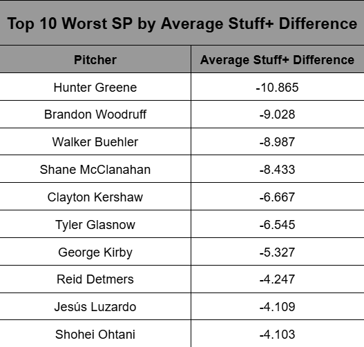

Turning Up the Heat: Does Saving Your Best for the Biggest Moments Make You a Better Pitcher?
By William Lee | May 27, 2025

Introduction
A couple months ago, I came across an interesting video by Foolish Bailey titled “Shohei Ohtani’s Most Important Skill.” This video details how Shohei Ohtani has mastered the skill of “energy allocation,” or how Ohtani allocates more of his “energy” as a pitcher towards throwing harder in higher leverage moments - such as third time through the order or runners in scoring position.
When Ohtani is playing as a two-way player, it makes sense that he needs to effectively allocate his energy towards these more important moments, considering he plays so much more baseball than anyone in the sport.
This video got me thinking about whether other pitchers similarly allocate their “energy” to higher leverage moments.
Heat, Heat, Heat
It is no secret that pitchers today throw harder than ever before, as the league average fastball velocity has increased by 2.3 MPH since just 2008. But interestingly enough, only since the 2020 pandemic season have starters begun throwing fewer innings and pitches per start.
 (Source: https://blogs.fangraphs.com/the-state-of-starters-in-2024/)
(Source: https://blogs.fangraphs.com/the-state-of-starters-in-2024/)
Considering this recent decrease in starting pitcher usage, it becomes more apparent how “energy allocation” can be a useful skill, as saving your energy for when you need it may allow you to go deeper into games or be more durable as a pitcher.
So is “energy allocation” a league-wide trend that pitchers will utilize in order to conserve their arms and lengthen their starts, or are pitchers just going all out on every pitch trying to be as effective as possible all the time? And if this skill does exist, are those that utilize it more valuable than those who do not?
Qualifications
To explore this idea, I decided to analyze only starting pitchers, since relief pitchers do not have the same incentive to pace themselves as they only throw an inning or two opposed to five or six innings. Furthermore, I decided to only analyze seasons from 2020-2024, since the pandemic season appears to have been a catalyst for lower starting pitcher usage.
The Stuff+ Approach
When I originally formulated this idea, I decided to use a FanGraphs metric called Stuff+, which assesses only the physical characteristics of a pitch such as release point, velocity, movement, and spin rate to score pitches on a scale where 100 is average. This metric would serve as the quantification for “energy” per pitch, since a pitcher who uses more “energy” would likely throw a ball with more velocity or movement than normal.
To quantify leverage, I used another FanGraphs metric called player leverage index (pLI), which uses the current base-out state, inning, and score to assess the possible changes in Win Expectancy for a plate appearance and provide a measure of how high the stakes are in a particular plate appearance. pLI is scaled where 1.0 is average, so I classified any game a starter threw in as “high-leverage” if the pLI was greater than 1.0.
To analyze whether starting pitchers used more “energy” in high leverage situations, I isolated high-leverage games where pLI > 1. I then calculated the average Stuff+ in these high-leverage games and subtracted the average overall Stuff+ for all games, creating a mean Stuff+ difference measure. I repeated this process for the top 100 starting pitchers sorted by innings pitched from 2020-2024.
Un-Clutch Gene?

Interestingly, the above histogram shows that pitchers seem to pitch with less “energy” in high leverage games as compared to all games.


Furthermore, there does not seem to be any strong correlation between Average Stuff+ Difference and either fWAR (r = -0.0395) or innings pitched (r = 0.3513).
When you dive deeper into the top 10 worst pitchers by average Stuff+ difference, you find that Shohei Ohtani lands on this list, which directly contradicts what Foolish Bailey says about Shohei Ohtani’s energy allocation.
A New Approach
I originally planned on using only Stuff+ and pLI to complete this analysis, but I worried that what pLI quantified was not specific enough to a “high-leverage” situation, since pLI measures are averaged for an entire game and not for specific high-leverage situations. Perhaps Stuff+ and pLI combined to show that pitchers get in worse situations when they throw with worse stuff, which is not a very helpful finding. Thus, I used Baseball Savant to corroborate the findings of the Stuff+ Approach.
To quantify “energy”, I analyzed only velocity and ignored other physical characteristics such as spin rate or movement. Furthermore, I limited this analysis to only fastballs for the sake of simplicity, since breaking and offspeed pitches would require an analysis of other characteristics like vertical/horizontal movement and spin rate that would complicate the analysis.
To quantify leverage, I filtered Baseball Savant for pitches thrown when there were runners in scoring position (RISP), since RISP is the highest-leverage independent situation for a pitcher over count or time through the order.
To analyze whether starting pitchers used more “energy” in these high-leverage situations, I calculated the average fastball velocity during RISP situations and subtracted the overall average fastball velocity to obtain a mean difference in velocity. I similarly repeated this process for all qualified starting pitchers from 2020-2024.
Empty Effort

As the above histogram shows, there seems to be a slight uptick in fastball velocity when pitchers are in higher leverage situations. But as displayed in the scatterplots below (separated by fastball types: FF = four-seam, SI = sinker, and FC = cutter) there appears to be no significant correlation between Fastball Velocity Difference and either fWAR (r = 0.1948) or innings pitched (r = 0.1704).


Conclusion and Future Directions
Although there is a disagreement between the conclusions of the Stuff+ Approach and the Savant Approach when it comes to a velocity difference between high-leverage and overall situations, I trust the results of the Savant Approach more, since the ability to specify RISP situations better captures what a truly high-leverage situation is more than pLI. As expected, the data shows that most pitchers increase their velocity in high leverage situations. As to whether this increase is useful, however, neither metric indicated a correlation between “energy” differences and value or longevity statistics. Perhaps this increase’s usefulness can be further explored by analyzing wOBA or OPS outcomes in specifically high-leverage situations. But my final conclusion is that this uptick in velocity for high-leverage situations is not generally useful for MLB pitchers.